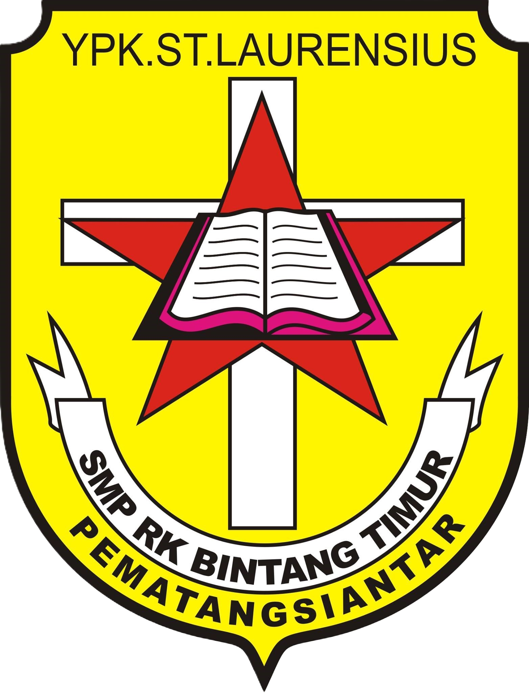

Jenjang Akademik

Sekolah Dasar
2009 – 2015
klik untuk detail

Sekolah Menengah Pertama
2015 – 2018
klik untuk detail
Sekolah Menengah Atas
2018 – 2021
klik untuk detail
Strata 1
2021 – 2025
klik untuk detail